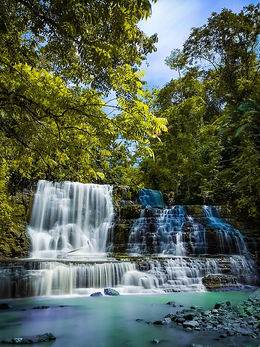

Region 9, also known as Zamboanga Peninsula, is a region located in the western part of Mindanao island in the Philippines. It is composed of three provinces: Zamboanga del Norte, Zamboanga del Sur, and Zamboanga Sibugay, as well as the chartered city of Zamboanga. Region 9 is known for its rich cultural heritage, diverse ethnic groups, stunning natural landscapes, and historical significance.
Zamboanga del Norte is a province known for its beautiful beaches, waterfalls, and natural attractions. It offers opportunities for snorkeling, diving, and island hopping. The province is also home to the mesmerizing Merloquet Falls and the famous Dakak Beach Resort.
Zamboanga del Sur is a province that boasts diverse landscapes, including mountains, caves, and coastal areas. It offers adventure activities such as canyoneering, white water rafting, and hiking. Zamboanga del Sur is also known for its historical landmarks, including the Rizal Shrine and the historic Fort Pilar in Zamboanga City.
Zamboanga Sibugay is a province known for its natural attractions and cultural heritage. It offers scenic landscapes, mangrove forests, and diverse wildlife. The province is also home to the sacred Pitogo Island, which is known for its traditional rituals and customs.
Zamboanga City is a chartered city and the regional center of Region 9. It is known for its vibrant cultural mix and historical significance. The city offers a blend of Spanish colonial architecture, such as the Fort Pilar Shrine and the City Hall, as well as bustling markets and delicious local cuisine. Zamboanga City is also famous for the annual Zamboanga Hermosa Festival, a grand celebration of the city's culture and traditions.
Region 9, Zamboanga Peninsula, offers a unique blend of natural beauty, cultural diversity, and historical landmarks. From exploring pristine beaches and waterfalls to immersing in the vibrant local culture and heritage, this region provides a captivating experience for travelers. Whether you're seeking adventure, historical exploration, or simply enjoying the warmth of the local communities, Zamboanga Peninsula has much to offer.